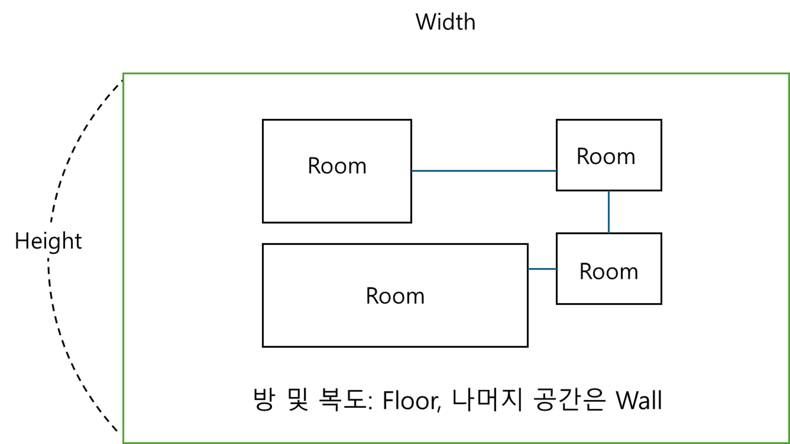
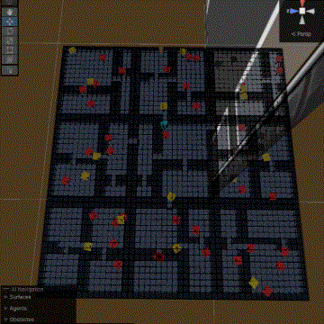

개발노트
ROGUELIKE RPG · 2025.04 — 2025.07 · 게임 제작 총괄 / PM
Project Darknight
방과 복도가 이어진 던전을 탐험하면 다음 청크가 열립니다. 던전이 커질 때 가장 까다로웠던 일은 새 지형을 만드는 순간에도 이동을 매끄럽게 유지하는 것이었습니다.

담당 작업
BSP 알고리즘 기반의 방·복도 절차적 생성
청크 스트리밍과 메쉬 컴바인을 이용한 렌더링 최적화
UniTask 기반 Dynamic NavMesh 갱신
상태 패턴과 Behaviour Tree를 활용한 캐릭터 AI
구현 과정
타일맵 정의
청크 너비와 높이로 TileType 2차원 배열을 만들고, 기본값은 Wall, 생성된 방과 복도는 Floor로 기록했습니다.
BSP 재귀 분할
공간을 Left/Right 노드로 나누되 분할선을 전체 길이의 0.3~0.8 사이에서 정했습니다. 최소 방 크기 조건으로 지나치게 작은 공간을 방지했습니다.

방과 복도 연결
리프 노드에 크기가 다른 방을 배치하고 부모 노드를 역순회했습니다. 양쪽 자식 방의 중심을 ㄱ·ㄴ자 경로로 연결해 모든 방의 도달 가능성을 보장했습니다.
런타임 청크 완성
사방 이웃의 연결 상태를 검사해 가장 얇은 벽을 찾고 RaycastAll로 통로를 열었습니다. 연결 완료 후 메시 결합, NavMesh 갱신, 풀 오브젝트 배치를 순차 실행했습니다.

개발 중 해결한 문제
배치와 활성 오브젝트가 계속 증가
청크 좌표를 키로 딕셔너리화하고 플레이어 시야 거리 안의 청크만 Dirty Flag로 활성화했습니다. 정적 오브젝트와 커스텀 셰이더가 많은 구조라 매 프레임 오버헤드가 있는 GPU Instancing보다 생성 시 한 번 비용을 지불하는 Mesh Combine을 선택했습니다.

던전 확장 순간 프레임 드롭
Mesh Combine, NavMesh 데이터 수집, 풀 보충이 동시에 실행되는 것이 원인이었습니다. 무거운 작업을 단계별 함수로 분해하고 Coroutine과 UniTask로 프레임에 분산했으며, 풀 부족분은 프레임당 하나만 생성하도록 제한했습니다.
NavMesh 갱신 때 전체 계층 탐색
기본 수집 방식은 청크가 늘수록 탐색 비용이 커졌습니다. 각 청크가 자신의 NavMeshModifier 목록을 미리 보관하게 하고 갱신 범위의 데이터만 수동 조합해 UpdateNavMesh에 전달했습니다.